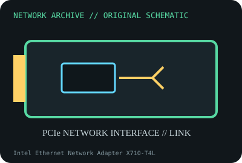

[ MODEL-SPECIFIC NETWORK HARDWARE ]
Intel Ethernet Network Adapter X710-T4L
Four-port 10GBASE-T PCIe server adapter with NBASE-T support. Confirm exact product label and revision before applying specifications.

IDENTIFICATION: Confirm manufacturer PID, hardware revision, device ID or module suffix. Nominal standards/link rates are not measurements of payload performance.
Exact specifications and compatibility
| Dedicated subcategory | 10 Gigabit and server adapters |
|---|---|
| Exact product/model | Intel Ethernet Network Adapter X710-T4L |
| Bus, ports and physical interface | PCIe 3.0 x8; four RJ-45 10GBASE-T ports. |
| PHY, radio or protocol | Intel X710-T4L family controller/PHY; 10/5/2.5/1GbE rates depend on supported link partner, cable and firmware. |
| Nominal rate (not measured) | Up to 10Gb/s per port; nominal four-port sum 40Gb/s, not a measured result. |
| Measured throughput | No measured benchmark is claimed for a physical specimen. A valid result must record host/peer, link partner, media/cable, driver/firmware, traffic pattern, test tool and duration. |
| Drivers, OS and firmware | Intel i40e driver for supported Linux; Windows Server and NVM packages vary by board version and OS. |
| Compatibility | PCIe x8 and sufficient airflow for four copper PHYs; use cabling qualified for each target rate/distance. |
| Variant warning | X710-T4L is four copper NBASE-T ports, not X710-DA4 SFP+ or earlier X710-T4. Match exact product name/NVM. |
Model and revision notes
X710-T4L is four copper NBASE-T ports, not X710-DA4 SFP+ or earlier X710-T4. Match exact product name/NVM.
Intel i40e driver for supported Linux; Windows Server and NVM packages vary by board version and OS.
PCIe x8 and sufficient airflow for four copper PHYs; use cabling qualified for each target rate/distance.
Archival, ESD and preservation notes
Record exact product code, NVM, four MACs and supported airflow requirements; use anti-static bag and maintain heatsink clearance.
Document source URL, access date, document revision and specimen label/condition. Preserve without credentials or private configuration.
Primary manufacturer and standards sources
- Intel X710-T4L product specificationsPrimary manufacturer or standards documentation; verify exact SKU and host revision.
- Intel Ethernet support and downloadsPrimary manufacturer or standards documentation; verify exact SKU and host revision.
- IEEE 802.3 Ethernet standardsPrimary manufacturer or standards documentation; verify exact SKU and host revision.
Manufacturer statements cover the named part or its documented product family; the exact labeled revision and vendor compatibility list take precedence.